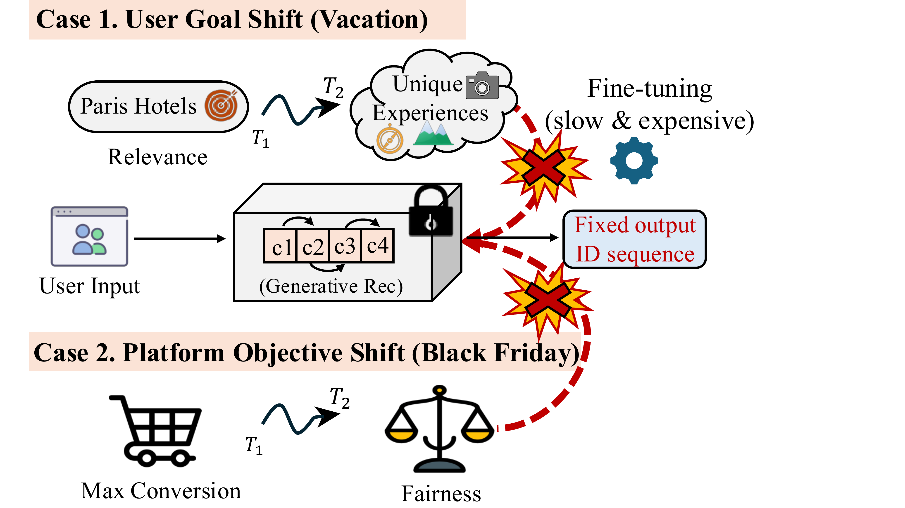
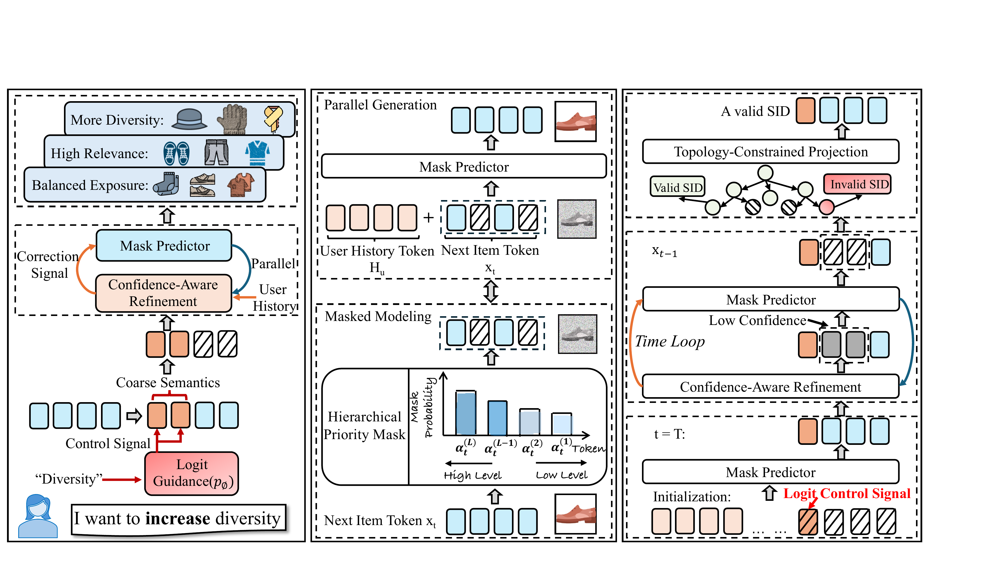
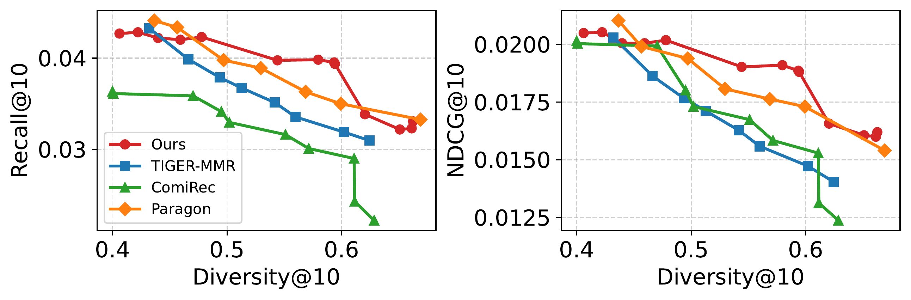
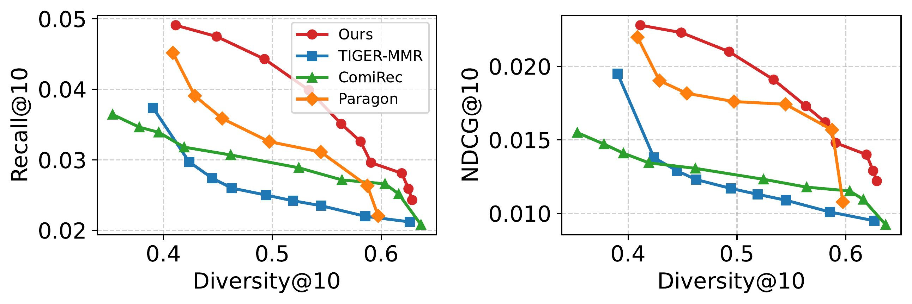
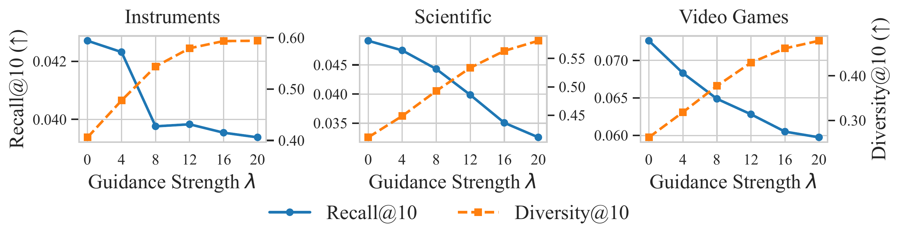
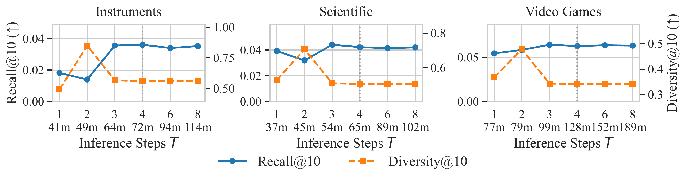

IEEE International Conference on Data Mining (ICDM), 2026
Controllable Generative Recommendation via Guided Token Refinement
1Xi'an Jiaotong-Liverpool University, China
2University of Liverpool, United Kingdom
3The Hong Kong Polytechnic University, Hong Kong SAR, China
†Corresponding author通讯作者
Presentation论文报告
A 15-minute presentation of the motivation, ReGen framework, and experimental results.
一段约 15 分钟的论文报告，介绍研究动机、ReGen 框架与实验结果。
Abstract摘要
Generative recommendation over discrete Semantic IDs has become a powerful paradigm for item retrieval. Real-world systems, however, frequently require real-time controllability to balance accuracy against objectives such as diversity. Existing autoregressive methods generate tokens strictly from left to right. This fixed direction locks in early decisions, preventing holistic planning and making control difficult. Consequently, direct interventions often break the semantic structure, producing non-existent items.
To address this, we propose ReGen, a framework that shifts from sequential decoding to parallel iterative refinement. ReGen reformulates generation as a mask-filling task, predicting all tokens simultaneously rather than one by one. This global view allows us to apply control signals directly to tokens with high-level semantics without retraining the model. To ensure that decoded candidates map to real items, we introduce a topology-constrained tree that iteratively corrects low-confidence predictions while strictly enforcing valid codebook paths during beam-based inference. Experiments show that ReGen provides a favorable accuracy-diversity trade-off under moderate guidance while maintaining high validity of generated Semantic IDs. The source code is available on GitHub.
基于离散语义 ID 的生成式推荐已成为物品检索的重要范式。然而，真实系统往往需要实时调节生成行为，在准确性与多样性等目标之间取得平衡。现有自回归方法严格按照从左到右的顺序生成 token，早期决策会锁定后续预测，使整体规划和即时控制变得困难。因此，直接干预常会破坏语义结构，产生无法映射到真实物品的 ID。
为此，我们提出 ReGen，将序列解码转化为并行迭代细化。ReGen 把生成过程建模为掩码填充任务，同时预测全部 token，并在无需重新训练模型的情况下将控制信号直接施加到具有高层语义的 token 上。为确保解码结果对应真实物品，我们进一步引入拓扑约束树，在基于 beam 的推理过程中迭代修正低置信度预测，并严格限制生成路径落在有效码本拓扑中。实验表明，在适度引导下，ReGen 能取得良好的准确性-多样性权衡，同时保持较高的语义 ID 有效率。源代码已发布于 GitHub。
Key Contributions主要贡献
- Parallel controllable generation. ReGen replaces left-to-right decoding with parallel iterative refinement, enabling global semantic planning and real-time control at inference.
- Hierarchical Logit Guidance. Control signals act on coarse semantic tokens during inference, allowing the desired behavior to change without updating model parameters.
- Validity-preserving refinement. Confidence-Aware Refinement and a Topology-Constrained Tree repair uncertain tokens and restrict decoding to valid Semantic ID paths.
- Evidence across utility and control. Experiments evaluate standard recommendation accuracy, accuracy-diversity trade-offs, component contributions, and sensitivity to guidance strength and refinement steps.
- 并行可控生成。 ReGen 以并行迭代细化替代从左到右的解码，从而支持全局语义规划与推理阶段的实时控制。
- 分层 Logit 引导。 控制信号在推理时作用于粗粒度语义 token，无需更新模型参数即可调整生成目标。
- 保持有效性的细化机制。 置信度感知细化与拓扑约束树修复不确定 token，并将解码严格限制在有效语义 ID 路径内。
- 同时评估效用与可控性。 实验覆盖标准推荐准确性、准确性-多样性权衡、核心组件贡献，以及引导强度与细化步数的敏感性。
Motivation研究动机
Recommendation objectives can change while a system is serving users. A traveler may move from highly relevant hotels to more diverse local experiences, while a platform may shift from conversion to fairness or broader exposure. Re-training for every change is too slow and expensive.
Autoregressive Semantic ID generators make this harder because each prefix decision constrains all later tokens. Intervening after an early token has been selected can damage the identifier structure and produce codes that do not correspond to real catalog items. ReGen is designed to support inference-time control while preserving semantic coherence and validity.
推荐系统的目标可能在服务过程中发生变化。例如，旅行者可能从高度相关的酒店转向更具多样性的本地体验；平台也可能从转化率转向公平性或更广泛的曝光。针对每次目标变化重新训练模型既缓慢又昂贵。
自回归语义 ID 生成器使这一问题更加突出，因为前缀中的每个决策都会约束后续 token。若在早期 token 已确定后强行干预，可能破坏 ID 结构，生成无法对应真实目录物品的编码。ReGen 的目标是在保持语义一致性和有效性的同时实现推理时控制。

Method方法
ReGen combines a bidirectional mask-prediction backbone with training-free guidance, iterative token repair, and topology-constrained beam inference. The framework first predicts Semantic ID tokens in parallel, guides selected coarse tokens toward the control objective, revisits low-confidence positions, and finally retains only valid catalog paths before item-level ranking.
ReGen 将双向掩码预测骨干与免训练引导、迭代 token 修复和拓扑约束 beam 推理相结合。框架首先并行预测语义 ID token，再引导选定的粗粒度 token 朝控制目标变化，随后重新预测低置信度位置，最后仅保留有效目录路径并完成物品级排序。

1. Parallel Semantic ID Generation
A bidirectional Transformer treats the candidate Semantic ID as a mask-filling problem and predicts all token positions together. Residual-quantized codes provide a coarse-to-fine hierarchy in which earlier tokens capture broader semantics and later tokens preserve item detail.
1. 并行语义 ID 生成
双向 Transformer 将候选语义 ID 建模为掩码填充问题，同时预测所有 token 位置。残差量化编码形成由粗到细的层次结构：早期 token 表示更高层语义，后期 token 保留物品细节。
2. Hierarchical Logit Guidance
At inference time, ReGen adjusts logits at selected coarse levels according to the requested control signal. For diversity control, frequent high-level semantics in the user's history receive a penalty. The intervention is lightweight and does not update the trained model.
2. 分层 Logit 引导
在推理阶段，ReGen 根据指定控制信号调整选定粗粒度层的 logit。以多样性控制为例，用户历史中频繁出现的高层语义会受到惩罚。该干预轻量且无需更新已训练模型。
3. Confidence-Aware Refinement
After each parallel prediction, the model keeps reliable anchors and re-masks positions whose confidence falls below a round-specific threshold. Repeated prediction and correction restore fine-grained coherence when the control signal perturbs coarse semantics.
3. 置信度感知细化
每轮并行预测后，模型保留可靠锚点，并重新掩码置信度低于轮次阈值的位置。反复的预测与修正可以在控制信号扰动粗粒度语义后恢复细粒度一致性。
4. Topology-Constrained Beam Inference
A tree built from catalog Semantic IDs masks token expansions that cannot lead to a real item. Beam inference retains multiple valid candidates; decoded IDs are then mapped to items, deduplicated, filtered against user history, and selected according to utility and category coverage.
4. 拓扑约束 Beam 推理
由目录语义 ID 构建的树会屏蔽无法通向真实物品的 token 扩展。Beam 推理保留多个有效候选，随后将解码 ID 映射到物品，完成去重、历史过滤，并按照效用与类别覆盖率构建推荐列表。
Experiments实验
We evaluate ReGen on the Musical Instruments, Industrial & Scientific, and Video Games categories of the Amazon 2023 Review dataset. User interactions are ordered chronologically with the last item used for testing and the second-to-last for validation. The comparison includes discriminative, generative, and controllable recommenders. Ranking utility is measured by Recall and NDCG at 5 and 10, while controllability is measured by category coverage (Diversity).
我们在 Amazon 2023 Review 数据集的 Musical Instruments、Industrial & Scientific 和 Video Games 三个类别上评估 ReGen。用户交互按时间排序，最后一个物品用于测试，倒数第二个用于验证。对比方法包括判别式、生成式和可控推荐模型。排序效用采用 Recall 与 NDCG@5/10，可控性采用类别覆盖率（Diversity）衡量。
- Accuracy-oriented utility: ReGen obtains Recall@10 of 0.0646 on Instruments, 0.0491 on Scientific, and 0.0726 on Video Games. The paper positions this as a usable utility basis rather than a pure-accuracy superiority claim.
- Matched-diversity comparison: around Diversity@10 = 0.54 on Instruments, ReGen reaches Recall@10/NDCG@10 of 0.0398/0.0190, compared with 0.0351/0.0163 for TIGER-MMR and 0.0316/0.0167 for ComiRec.
- Validity: the full method maintains 99.97% valid Semantic IDs on Instruments and Scientific. Without topology constraints, validity falls to 27.63% and 29.76%, respectively.
- Convergence: performance stabilizes around four refinement steps, providing a practical trade-off between recommendation quality and inference cost.
- 准确性配置下的效用：ReGen 在 Instruments、Scientific 和 Video Games 上的 Recall@10 分别为 0.0646、0.0491 和 0.0726。论文将其定位为可控推理的有效效用基础，而非纯准确性优势。
- 相近多样性下的比较：在 Instruments 上 Diversity@10 约为 0.54 时，ReGen 的 Recall@10/NDCG@10 为 0.0398/0.0190，高于 TIGER-MMR 的 0.0351/0.0163 和 ComiRec 的 0.0316/0.0167。
- 有效性：完整模型在 Instruments 和 Scientific 上均保持 99.97% 的有效语义 ID；移除拓扑约束后，有效率分别降至 27.63% 和 29.76%。
- 收敛性：性能在约四轮细化后趋于稳定，在推荐质量和推理成本之间形成实用平衡。
Accuracy-diversity trade-off准确性-多样性权衡
ReGen guides generation directly in logit space instead of only re-ranking a fixed candidate set. Across the reported operating range, it retains more ranking utility as the requested diversity increases.
ReGen 在 logit 空间中直接引导生成，而不仅是在固定候选集合上重新排序。在论文报告的工作区间内，随着目标多样性提高，ReGen 能保留更多排序效用。


Component ablation组件消融
Guidance raises diversity, refinement prevents the resulting utility collapse, and the topology constraint keeps generated identifiers inside the catalog. All variants below use the same controllability-oriented inference setting.
引导机制提高多样性，细化机制避免由此造成的效用崩溃，拓扑约束则确保生成 ID 位于真实目录中。下表所有变体采用相同的可控推理配置。
| Variant变体 | Instruments | Scientific | ||||
|---|---|---|---|---|---|---|
| R@10 | D@10 | Val@10 | R@10 | D@10 | Val@10 | |
| ReGen (Full) | 0.0339 | 0.5606 | 99.97% | 0.0414 | 0.5051 | 99.97% |
| w/o Guidance | 0.0355 | 0.4851 | 99.97% | 0.0436 | 0.4644 | 99.97% |
| w/o Refinement | 0.0130 | 0.7321 | 99.97% | 0.0267 | 0.7307 | 99.97% |
| w/o Topology | 0.0136 | 0.0001 | 27.63% | 0.0315 | 0.0151 | 29.76% |
Parameter sensitivity and efficiency参数敏感性与效率
Guidance strength controls the relevance-diversity balance. Moderate values provide a stable operating region, while excessive guidance eventually reduces recall. Refinement converges quickly, with four steps selected as a practical operating point.
引导强度控制相关性与多样性的平衡。适中的取值形成稳定工作区间，过强引导最终会降低召回率。细化过程收敛较快，四轮被选为实用工作点。


BibTeX
This provisional entry reflects the accepted ICDM 2026 paper. DOI and page numbers will be added when the proceedings are available.
以下为 ICDM 2026 已接收论文的临时条目；正式论文集发布后将补充 DOI 与页码。
@inproceedings{zhang2026regen,
title = {Controllable Generative Recommendation via Guided Token Refinement},
author = {Zhang, Haichao and Liang, Zhixuan and Zhang, Chong and Chen, Zixi and Wang, Wen and Wang, Jia},
booktitle = {2026 IEEE International Conference on Data Mining (ICDM)},
year = {2026},
url = {https://zhanghaichao.loc.cc/ReGen/}
}Acknowledgements
This study was funded by the National Natural Science Foundation of China (Grant No. 72401232), the Natural Science Foundation of the Jiangsu Higher Educational Institution of China (Grant No. 23KJB520037), the XJTLU Research Development Fund (RDF-21-01-053), and Liaoning Liaohe Lab (Grant Nos. LLL24ZZ-02-01 and LLL24ZZ-02-02).
致谢
本研究获得国家自然科学基金（项目号 72401232）、江苏省高等学校自然科学研究项目（项目号 23KJB520037）、西交利物浦大学 Research Development Fund（RDF-21-01-053）以及辽宁辽河实验室（项目号 LLL24ZZ-02-01、LLL24ZZ-02-02）的资助。